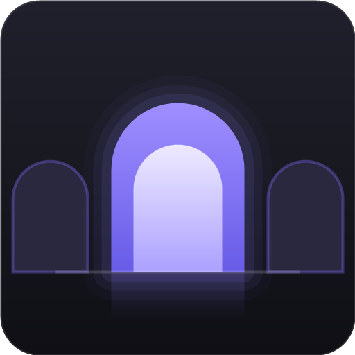

Obsidian utility · Windows, macOS and Linux · Tauri 2
Old Norse hvelfa: to vault, to arch.

A hotkey-summoned tile board for your Obsidian vaults. Press a key, see your vaults as tiles, hit a number or click. The vault opens, or its existing window comes to front, and the board gets out of your way.
Open vaults carry an aurora edge. Recency puts the vault you were last in at 1.
Obsidian's own vault switcher is modal and slow, and the tray flyout is an unlabelled list. If you run many vaults, switching should cost one keystroke and one glance. That is all hvelf does.
Hvelfa is the Old Norse verb for vaulting: to arch over something (and, said of a boat, to capsize, which feels right for a tool you reach for when you are drowning in windows). Its descendants still carry the meaning today. A Norwegian hvelv is a bank vault; an Icelandic hvelfing is a vaulted ceiling. One old word spans the same pun Obsidian built on: strongrooms that keep valuables, and arches that hold up a roof.
The icon is the app doing its job: an arcade of vault doorways, the centre one lit. Summon the board and that is what you see, a row of your vaults with the open ones glowing.
keeps/ folder, with where it came from. Windows reads the
selection through UI Automation and Linux reads the X11 primary selection;
neither sends a key or touches the clipboard. The board opens in keep mode to
take the vault, and a capture is never discarded. Not on macOS, and not on
Wayland, which gives no application another one's selection.obsidian://
URI if it is not.× that closes that vault's window. It is an ordinary close, so
Obsidian saves state, and the renderer gives back the RAM it was holding.× takes its tile off the board, for vaults that have gone stale. The
first click asks and the second removes. The vault's path goes into
hide in the config and Obsidian is left alone. Hidden
vaults, in the tray menu, lists every vault taken off the board; click
one and its tile comes back. Where no tray shows, hvelf --hidden
lists them and hvelf --unhide puts one back.Vaults come from Obsidian's own registry (obsidian.json), so there
is nothing to set up and the board always matches what Obsidian knows. Given a
vault map, as Lab-OS's exo vaults --json prints one, a link and the
folder it points at are one tile, bounded vaults are marked, and keeps are filed
by Lab-OS's own keep command, so its checks apply.
Installers come from the releases
page, built by the workflow from a tagged commit: a .deb for Linux
x86_64 (Ubuntu 24.04 or newer, WebKitGTK 4.1), an NSIS .exe for Windows
x86_64, and a .dmg each for Intel and Apple Silicon Macs.
SHA256SUMS covers every file, and each package carries a receipt naming
its source commit. The first is
v0.1.0, a
prerelease: the Windows installer is unsigned and the disk images are not
notarised, so each system asks before it runs.
Requires Rust, with the MSVC toolchain on Windows, the Xcode command line tools on macOS, and the WebKitGTK and AppIndicator development packages on Linux, listed in RELEASING.md. A binary-only build needs no Node or npm; installer packaging uses the pinned npm tooling.
cd src-tauri
cargo build --releaseThe binary lands in src-tauri/target/release/, as
hvelf.exe on Windows and hvelf on macOS and Linux. Run it once and
it sits silent until the hotkey.
%APPDATA%\hvelf\config.json on Windows and
~/.config/hvelf/config.json on macOS and Linux, created with defaults on
first run:
{
"hotkey": "alt+grave",
"quickLaunch": "alt+1",
"keep": "alt+k",
"hideOnBlur": true,
"hide": ["OldVault"],
"groups": [
{ "name": "research", "vaults": ["orbit", "cFD", "optics"] },
{ "name": "admin", "vaults": ["taxes"] }
],
"deepLinks": { "orbit": "index" }
}Hotkeys combine ctrl, alt, shift and
win with a letter, a digit, an f-key, or grave. The name
grave binds the physical key under Esc on any keyboard layout: hvelf
registers keys natively by scancode rather than through a US-mapped name table, so
it works the same on UK, DE or FR layouts. On Linux the defaults are
ctrl+alt+grave and ctrl+alt+1, since GNOME already has Alt
and the key above Tab; a chord the desktop binds to the same hvelf command is left
to the desktop. Field notes for the rest are in the
README.
Three desktops, three depths of use.
Windows has had the most: the board, the tray and the keep chord ran daily on the author's machine until his desktop moved to Linux in September 2026. The October changes build and pass their tests there in CI; they have not yet run on a Windows desktop.
Linux has run daily on that KDE desktop, under X11, since October
2026. Window observation and control go through EWMH, so under Wayland the board
launches vaults but cannot raise or close their windows, and the keep chord is
unsupported. GNOME shows the tray only with the AppIndicator extension;
hvelf --hidden and --unhide are the way back without one.
hvelf --capabilities prints what the session you are in allows.
macOS was built from source and clicked through on 2 November
2026, on an Intel MacBook Pro on macOS 26.6.2 with a UK ISO keyboard. The hotkeys
register through Carbon, so they ask for no accessibility permission, and bind both
the ANSI and the ISO code for the key under Esc, because macOS splits that
key in two. Open state comes from Obsidian's own per-vault flag, which can outlive a
crash and then mislabel a tile until Obsidian next writes it. Raising an already-open
vault falls through to the obsidian:// URI, recency falls back to
Obsidian's timestamps, and the keep chord is not bound. Apple Silicon has only been
built in CI.
v0.1.0 is a prerelease for that reason: the builds and their tests pass on all four targets, which is not the same as a desktop having been lived in. See builds and releases.